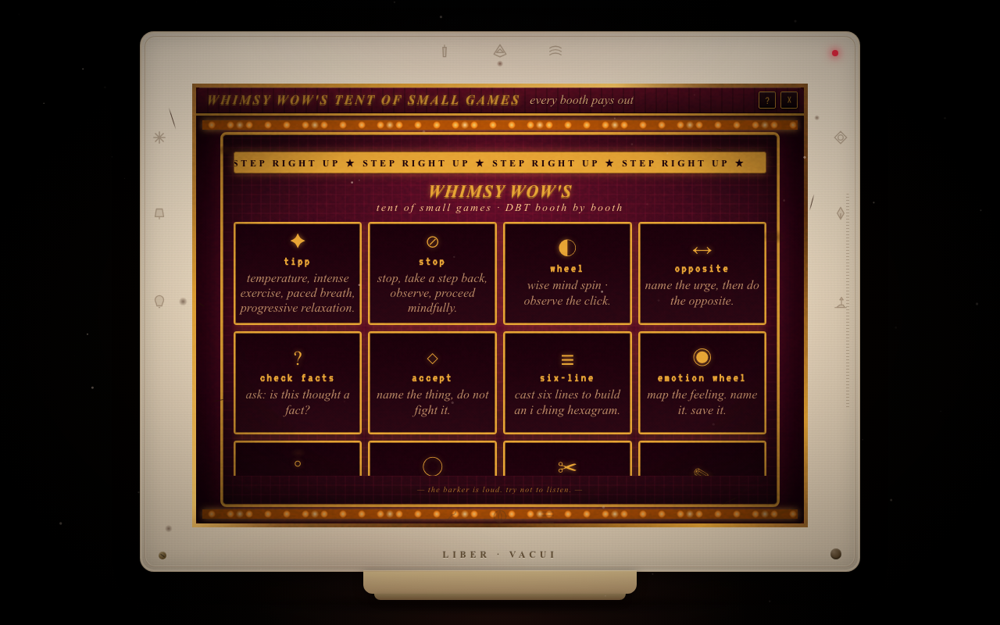

8.5 /10
World & voice
Whimsy Wow has a clear persona: barker, velvet, gold, ticket-stub language. This is an asset. Keep it.
This is an evidence-based redesign brief for the games suite and the wider visual language. LiberOS already has a rare strength: it feels authored. The next move is not “add more decoration.” It is to make each game a small, legible ritual with a reason to return.
The tent is a strong wrapper around an under-designed loop.
Whimsy Wow has a clear persona: barker, velvet, gold, ticket-stub language. This is an asset. Keep it.
Eight vertical booths and a separate stage make the suite feel like a catalogue, not a destination with a first act.
Most activities are reflective worksheets with a coat of paint. The user rarely makes a meaningful choice or learns a new affordance.
Keeping results as artifacts and mirroring them to the satchel is excellent. It gives play a memory.
Unlocks exist, but the reasons to replay are mostly “make another result,” not mastery, surprise, collection, or social meaning.
CRT, velvet, bulbs, phosphor and hand-lettered copy create a coherent authored universe. Improve hierarchy, not the premise.
The code and the screenshot agree: the presentation is more confident than the interaction design.

Use these as redesign briefs, not as reasons to delete the character of the rooms.
The dartboard is theatrical, but the result is mostly random emotion + color. It can feel like being assigned a mood.
New loop: choose a weather front, steer pressure with two trade-offs, then name the forecast. The user authors meaning while the system adds surprise.
Reward: a forecast card with a changing sky, a one-line reflection, and a “return in 24 hours” comparison.
Two paint surfaces (“feel” and “show”) are a good metaphor but a thin interaction.
New loop: pick a signal to send, add static, then test how three listeners interpret it. The game teaches mismatch through consequence, not explanation.
Reward: a reusable phrase card the user can keep in the satchel.
Four quarters invite coloring, but “bright means solid” turns a complex boundary into a scoreless self-rating.
New loop: face small scenarios, choose open / pause / close, and spend a limited reserve of energy. No “correct” answer; the pattern is the artifact.
Reward: a boundary sigil plus one sentence the user wrote.
Typing names into rings is a useful inventory, but it is static and socially under-explained.
New loop: place tokens, draw a desired orbit, then compare current / desired distance. Make movement and revision the play.
Reward: a constellation fragment that can actually bind to a buddy or artifact.
This is the most game-like system: material, transformation, failure without punishment, and a visual trace.
Improve: add three authored challenges (bridge, shelter, impossible shape), a camera moment, and a gallery of prior sediments.
Idle growth is an excellent LiberOS-native idea because visiting other rooms becomes care.
Improve: make growth legible from the desktop, add seasonal mutations, and let harvested flowers alter future poster art.
A concept mockup: booths are navigational objects, posters explain the fantasy, and the stage earns the user’s attention.
Not a test. Not a diagnosis. A small instrument for noticing what kind of sky you are carrying.
Move the brass needle between fronts. The tent responds, then asks what you want to call it.
enter the booth →They make the tent feel inhabited. Each booth gets a material object, a silhouette, and a short promise. The user can scan horizontally without losing the stage.
Posters solve the current “what is this?” problem. A poster can communicate mood, duration, agency, and the kept artifact before the user commits.
Prettier should mean more authored relationships, not more ornament.
Give each game a tactile material: weather glass, newsprint, brass gate, wet sand. Use it in the poster, cursor, result card, and sound.
Every room should read as invite → act → keep. Hide secondary copy until the user has a clear next move.
Kept results should return as posters, constellation fragments, garden mutations, or status-line language. Persistence is the game’s secret weapon.
Call the emotional exercises “instruments” or “booths” in the UI. A game may be playful; a tool may be quiet. Both can belong in the tent.
Keep the CRT and marquee frame, but give the selected attraction 60–70% of the usable screen. The current side list competes with the thing being played.
Show “last forecast,” “new mutation,” “three posters kept,” or “try a different listener.” A return invitation is better than a generic save prompt.
A sequence that improves feel without requiring a rewrite of the whole OS.
Define a shared attraction model: id, persona, verb, duration, input type, result artifact, replay hook, unlock rule. Remove the implicit “every game is a canvas” assumption.
Redesign Emotion Wheel as Weather Inside, including poster, booth, three-beat loop, artifact card, and desktop return hook. Do not redesign all eight at once.
Implement the booths/poster/stage composition with the existing GAMES registry. The shell should support keyboard, reduced motion, locked states, and a deep-linkable attraction.
Render kept results in the satchel and constellation with distinct thumbnails and one-line meaning. Validate that a result is still understandable a week later.
Watch five first-time users. Measure time to first meaningful action, whether they can explain the promise, and whether they voluntarily replay or show the result.
Keep Powderworks and Little Elsewhere. Rebuild Weather Inside and Signal / Static next. Reframe Shield and Circles as instruments. Only then decide whether more attractions are needed.